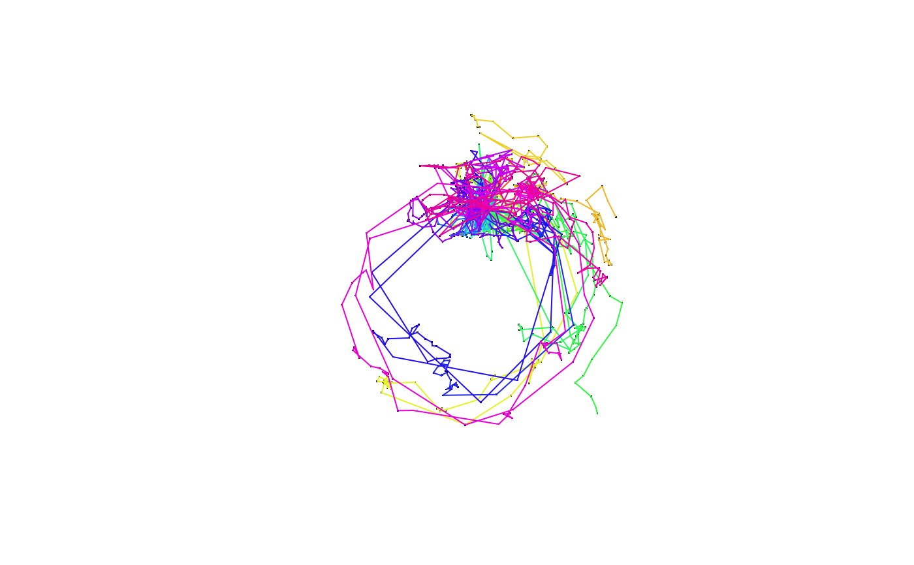

Function to handle animal track data, organized as trip objects
Source: R/AllMethod.R
trip-methods.RdCreate an object of class trip, extending the basic functionality
of SpatialPointsDataFrame by specifying the data columns
that define the "TimeOrdered" quality of the records.
trip(obj, TORnames, correct_all = TRUE) trip(obj) <- value # S4 method for trip split(x, f, drop = FALSE, ...) # S4 method for trip,ANY,ANY,ANY [(x, i, j, ..., drop = TRUE)
Arguments
| obj | A data frame, a grouped data frame or a |
|---|---|
| TORnames | Either a |
| correct_all | logical value, if |
| value | A 4-element character vector specifying the X, Y, DateTime coordinates
and ID of |
| x | trip object |
| f | grouping vector as per |
| drop | unused but necessary for method consistency |
| i, j, ... | indices specifying elements to extract |
Value
A trip object, with the usual slots of a
SpatialPointsDataFrame and the added
TimeOrderedRecords. For the most part this can be treated as a
data.frame with Spatial coordinates.
Details
The original form of trip() required very strict input as a 'SpatialPointsDataFrame' and
specifying which were the time and ID columns, but the input can be more flexible. If the object is a
grouped data frame ('dplyr-style') then the (first) grouping is assumed to define individual trips and that
columns 1, 2, 3 are the x-, y-, time-coordinates in that order. It can also be a trip object for
redefining TORnames.
The trip() function can ingest track_xyt, telemetry, SpatialPointsDataFrame, sf,
trackeRdata, grouped_df, data.frame, tbl_df, mousetrap, and in some cases
lists of those objects. Please get in touch if you think something that should work does not.
Track data often contains problems, with missing values in location or time,
times out of order or with duplicated times. The correct_all argument is
set to TRUE by default and will report any inconsistencies. Data really should
be checked first rather than relying on this auto-cleanup. The following problems are common:
duplicated records (every column with the same value in another row)
duplicated date-time values
missing date-time values, or missing x or y coordinates
records out of order within trip ID
For some data types there's no formal structure, but a simple convention such as
a set of names in a data frame. For example, the VTrack package has AATAMS1 which may be
turned into a trip with
trip(AATAMS1 %>% dplyr::select(longitude, latitude, timestamp, tag.ID, everything())
In time we can add support for all kinds of variants, detected by the names and contents.
See Chapter 2 of the trip thesis for more details.
Methods
Most of the methods available are by virtue of the sp package. Some, such
as split.data.frame have been added to SPDF so that trip has the same
functionality.
- trip
signature(obj="SpatialPointsDataFrame", TORnames="ANY")The main construction.
- trip
signature(obj="SpatialPointsDataFrame", TORnames="TimeOrderedRecords") Object and TimeOrdered records class
- trip
signature(obj="ANY", TORnames="TimeOrderedRecords"): create atripobject from a data frame.- trip
signature(obj="trip", TORnames="ANY"): (Re)-create atripobject using a character vector forTORnames.- trip
signature(obj="trip", TORnames="TimeOrderedRecords"): (re)-create a trip object using aTimeOrderedRecordsobject.
See also
speedfilter, and tripGrid for simplistic
speed filtering and spatial time spent gridding.
Examples
d <- data.frame(x=1:10, y=rnorm(10), tms=Sys.time() + 1:10, id=gl(2, 5)) ## the simplest way to create a trip is by order of columns trip(d)#> Warning: input looks like longitude/latitude data, assuming +proj=longlat +datum=WGS84#> #> Object of class trip #> tripID ("id") No.Records startTime ("tms") endTime ("tms") tripDuration #> 1 1 5 2020-06-04 15:24:34 2020-06-04 15:24:38 4 secs #> 2 2 5 2020-06-04 15:24:39 2020-06-04 15:24:43 4 secs #> #> data.columns data.class #> 1 tms POSIXct **trip DateTime** #> 2 id factor **trip ID** #>## or a grouped data frame can be used, the grouping is used as the trip ID ## library(dplyr) ## # use everything() to keep all other columns ## d %>% group_by(id) %>% select(x, y, tms, everything()) sp::coordinates(d) <- ~x+y ## this avoids complaints later, but these are not real track data (!) sp::proj4string(d) <- sp::CRS("+proj=laea +ellps=sphere", doCheckCRSArgs = FALSE) (tr <- trip(d, c("tms", "id")))#> #> Object of class trip #> tripID ("id") No.Records startTime ("tms") endTime ("tms") tripDuration #> 1 1 5 2020-06-04 15:24:34 2020-06-04 15:24:38 4 secs #> 2 2 5 2020-06-04 15:24:39 2020-06-04 15:24:43 4 secs #> #> data.columns data.class #> 1 tms POSIXct **trip DateTime** #> 2 id factor **trip ID** #>## real world data in CSV mi_dat <- read.csv(system.file("extdata/MI_albatross_sub10.csv", package = "trip"), stringsAsFactors = FALSE) ## installed subset because the data is quite dense ## mi_dat <- mi_dat[seq(1, nrow(mi_dat), by = 10), ] mi_dat$gmt <- as.POSIXct(mi_dat$gmt, tz = "UTC") mi_dat$sp_id <- sprintf("%s%s_%s_%s", mi_dat$species, substr(mi_dat$breeding_status, 1, 1), mi_dat$band, mi_dat$tag_ID) sp::coordinates(mi_dat) <- c("lon", "lat") ## there are many warnings, but the outcome is fine ## (sp_id == 'WAi_14030938_2123' has < 3 locations as does LMi_12143650_14257) mi_dat <- trip(mi_dat, c("gmt", "sp_id") )#> Warning: ordering input records by trip ID, then time#> Warning: removing trip IDs that have too few elements (<3): #> 'LMi_12143650_14257,WAi_14030938_2123'#> Warning: input looks like longitude/latitude data, assuming +proj=longlat +datum=WGS84#lines(mi_dat) ## ugly mi_dat_polar <- reproj(mi_dat, "+proj=stere +lat_0=-90 +lon_0=154 +datum=WGS84") plot(mi_dat_polar, pch = ".")lines(mi_dat_polar)if (FALSE) { ## a simple example with the common fixes required for basic track data dat <- read.csv("trackfile.csv") names(dat) ## e.g. [1] "long" "lat" "seal" "date" "local" "lq" library(sp) coordinates(dat) <- c("long", "lat") ## date/times may be in a particular time zone, please check dat$gmt <- as.POSIXct(strptime(paste(dat$date, dat$local), "%d-%b-%y %H:%M:%S"), tz="GMT") ## if there are problems in the data, this will error tr <- trip(dat, c("gmt", "seal")) ## the following code tries to fix common problems ## remove completely-duplicated rows dat <- dat[!duplicated(dat), ] ## order the rows by seal, then by time dat <- dat[order(dat$seal, dat$gmt), ] ## fudge duplicated times dat$gmt <- adjust.duplicateTimes(dat$gmt, dat$seal) ## finally, convert to Spatial and create trip object coordinates(dat) <- c("long", "lat") tr <- trip(dat, c("gmt", "seal")) }